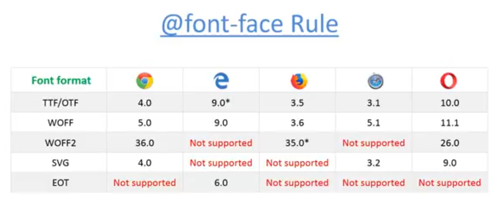

font-face @font-face is used to define font-family. If any local machine has font-family not install which we want to show for this we can link that font-family in our css by using @font-family.
Youtube Video Link...
Syntax:
@font-face
{
font-family:fontname;
src:url(fonts/JOKERMAN.TTF)
}
#id1
{
font-family:fontname;
font-size:25px;
}
Result:
My name is Arun Pawar.
Important point:
a) In font name we can't give space.
b) multiple fonts can also be given with single name.
"src:url(fonts/JOKERMAN.TTF),url(fonts/verdana.TTF)"
Supported formats in different browsers are as follows:
